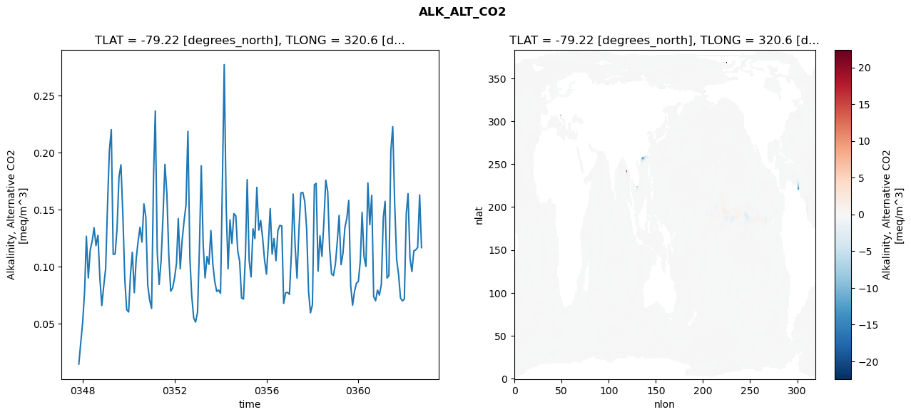
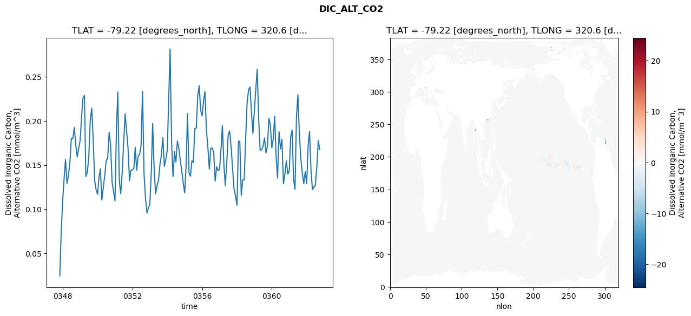
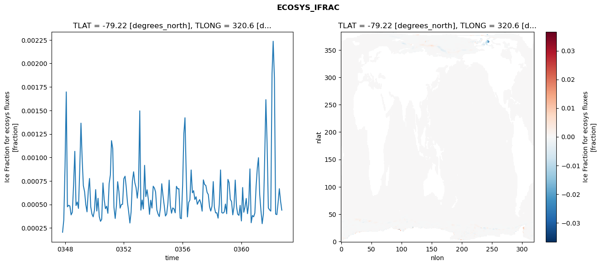
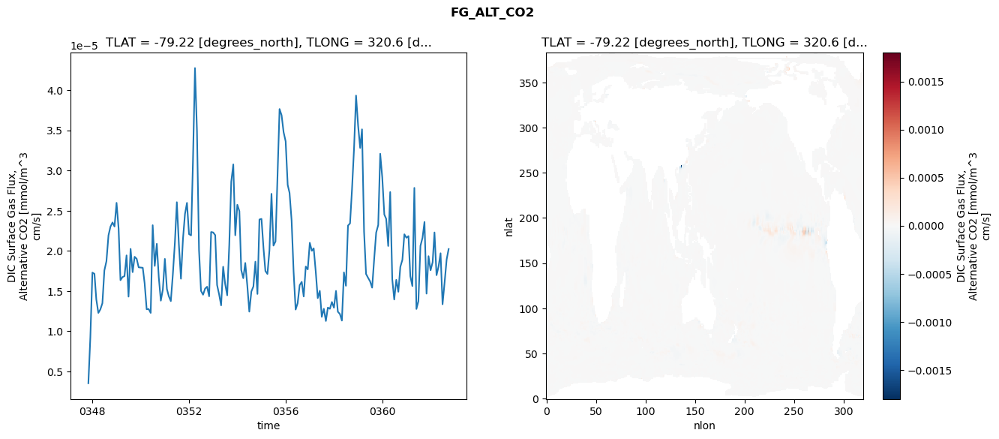

glb-dor_North_Atlantic_basin_039_1999-10-01_00159#
Simulation details#
Case: smyle.cdr-atlas-v0.glb-dor_North_Atlantic_basin_039_1999-10-01_00159.001
Basin: North_Atlantic_basin
Polygon: 39.0
Start date: 1999-10
Show code cell source Hide code cell source
import xarray as xr
import matplotlib.pyplot as plt
Show code cell source Hide code cell source
zarr_store = "/path/to/zarr/store"
# Parameters
zarr_store = "/global/cfs/projectdirs/m4746/Projects/Ocean-CDR-Atlas-v0/data/validation/smyle.cdr-atlas-v0.glb-dor_North_Atlantic_basin_039_1999-10-01_00159.001.validation.zarr"
Show code cell source Hide code cell source
%%time
ds_o = xr.open_zarr(zarr_store).compute()
ds_o
CPU times: user 667 ms, sys: 482 ms, total: 1.15 s
Wall time: 1.33 s
<xarray.Dataset> Size: 2MB
Dimensions: (nlat: 384, nlon: 320, time: 180)
Coordinates:
TLAT float64 8B -79.22
TLONG float64 8B 320.6
ULAT float64 8B -78.95
ULONG float64 8B 321.1
* time (time) object 1kB 0347-11-01 00:00:00 ... 0362-10-01 0...
z_t float32 4B 500.0
Dimensions without coordinates: nlat, nlon
Data variables:
ALK_ALT_CO2_diff (nlat, nlon) float32 492kB nan nan nan ... nan nan nan
ALK_ALT_CO2_rmse (time) float64 1kB 0.0146 0.03293 0.0511 ... 0.163 0.1168
DIC_ALT_CO2_diff (nlat, nlon) float32 492kB nan nan nan ... nan nan nan
DIC_ALT_CO2_rmse (time) float64 1kB 0.02464 0.07482 ... 0.1778 0.1675
ECOSYS_IFRAC_diff (nlat, nlon) float32 492kB nan nan nan ... nan nan nan
ECOSYS_IFRAC_rmse (time) float64 1kB 0.0002042 0.0003346 ... 0.0004389
FG_ALT_CO2_diff (nlat, nlon) float32 492kB nan nan nan ... nan nan nan
FG_ALT_CO2_rmse (time) float64 1kB 3.523e-06 9.248e-06 ... 2.023e-05xarray.Dataset
- nlat: 384
- nlon: 320
- time: 180
- TLAT()float64-79.22
- long_name :
- array of t-grid latitudes
- units :
- degrees_north
array(-79.22052261)
- TLONG()float64320.6
- long_name :
- array of t-grid longitudes
- units :
- degrees_east
array(320.56250892)
- ULAT()float64-78.95
- long_name :
- array of u-grid latitudes
- units :
- degrees_north
array(-78.95289509)
- ULONG()float64321.1
- long_name :
- array of u-grid longitudes
- units :
- degrees_east
array(321.12500894)
- time(time)object0347-11-01 00:00:00 ... 0362-10-...
- bounds :
- time_bound
- long_name :
- time
array([cftime.DatetimeNoLeap(347, 11, 1, 0, 0, 0, 0, has_year_zero=True), cftime.DatetimeNoLeap(347, 12, 1, 0, 0, 0, 0, has_year_zero=True), cftime.DatetimeNoLeap(348, 1, 1, 0, 0, 0, 0, has_year_zero=True), cftime.DatetimeNoLeap(348, 2, 1, 0, 0, 0, 0, has_year_zero=True), cftime.DatetimeNoLeap(348, 3, 1, 0, 0, 0, 0, has_year_zero=True), cftime.DatetimeNoLeap(348, 4, 1, 0, 0, 0, 0, has_year_zero=True), cftime.DatetimeNoLeap(348, 5, 1, 0, 0, 0, 0, has_year_zero=True), cftime.DatetimeNoLeap(348, 6, 1, 0, 0, 0, 0, has_year_zero=True), cftime.DatetimeNoLeap(348, 7, 1, 0, 0, 0, 0, has_year_zero=True), cftime.DatetimeNoLeap(348, 8, 1, 0, 0, 0, 0, has_year_zero=True), cftime.DatetimeNoLeap(348, 9, 1, 0, 0, 0, 0, has_year_zero=True), cftime.DatetimeNoLeap(348, 10, 1, 0, 0, 0, 0, has_year_zero=True), cftime.DatetimeNoLeap(348, 11, 1, 0, 0, 0, 0, has_year_zero=True), cftime.DatetimeNoLeap(348, 12, 1, 0, 0, 0, 0, has_year_zero=True), cftime.DatetimeNoLeap(349, 1, 1, 0, 0, 0, 0, has_year_zero=True), cftime.DatetimeNoLeap(349, 2, 1, 0, 0, 0, 0, has_year_zero=True), cftime.DatetimeNoLeap(349, 3, 1, 0, 0, 0, 0, has_year_zero=True), cftime.DatetimeNoLeap(349, 4, 1, 0, 0, 0, 0, has_year_zero=True), cftime.DatetimeNoLeap(349, 5, 1, 0, 0, 0, 0, has_year_zero=True), cftime.DatetimeNoLeap(349, 6, 1, 0, 0, 0, 0, has_year_zero=True), cftime.DatetimeNoLeap(349, 7, 1, 0, 0, 0, 0, has_year_zero=True), cftime.DatetimeNoLeap(349, 8, 1, 0, 0, 0, 0, has_year_zero=True), cftime.DatetimeNoLeap(349, 9, 1, 0, 0, 0, 0, has_year_zero=True), cftime.DatetimeNoLeap(349, 10, 1, 0, 0, 0, 0, has_year_zero=True), cftime.DatetimeNoLeap(349, 11, 1, 0, 0, 0, 0, has_year_zero=True), cftime.DatetimeNoLeap(349, 12, 1, 0, 0, 0, 0, has_year_zero=True), cftime.DatetimeNoLeap(350, 1, 1, 0, 0, 0, 0, has_year_zero=True), cftime.DatetimeNoLeap(350, 2, 1, 0, 0, 0, 0, has_year_zero=True), cftime.DatetimeNoLeap(350, 3, 1, 0, 0, 0, 0, has_year_zero=True), cftime.DatetimeNoLeap(350, 4, 1, 0, 0, 0, 0, has_year_zero=True), cftime.DatetimeNoLeap(350, 5, 1, 0, 0, 0, 0, has_year_zero=True), cftime.DatetimeNoLeap(350, 6, 1, 0, 0, 0, 0, has_year_zero=True), cftime.DatetimeNoLeap(350, 7, 1, 0, 0, 0, 0, has_year_zero=True), cftime.DatetimeNoLeap(350, 8, 1, 0, 0, 0, 0, has_year_zero=True), cftime.DatetimeNoLeap(350, 9, 1, 0, 0, 0, 0, has_year_zero=True), cftime.DatetimeNoLeap(350, 10, 1, 0, 0, 0, 0, has_year_zero=True), cftime.DatetimeNoLeap(350, 11, 1, 0, 0, 0, 0, has_year_zero=True), cftime.DatetimeNoLeap(350, 12, 1, 0, 0, 0, 0, has_year_zero=True), cftime.DatetimeNoLeap(351, 1, 1, 0, 0, 0, 0, has_year_zero=True), cftime.DatetimeNoLeap(351, 2, 1, 0, 0, 0, 0, has_year_zero=True), cftime.DatetimeNoLeap(351, 3, 1, 0, 0, 0, 0, has_year_zero=True), cftime.DatetimeNoLeap(351, 4, 1, 0, 0, 0, 0, has_year_zero=True), cftime.DatetimeNoLeap(351, 5, 1, 0, 0, 0, 0, has_year_zero=True), cftime.DatetimeNoLeap(351, 6, 1, 0, 0, 0, 0, has_year_zero=True), cftime.DatetimeNoLeap(351, 7, 1, 0, 0, 0, 0, has_year_zero=True), cftime.DatetimeNoLeap(351, 8, 1, 0, 0, 0, 0, has_year_zero=True), cftime.DatetimeNoLeap(351, 9, 1, 0, 0, 0, 0, has_year_zero=True), cftime.DatetimeNoLeap(351, 10, 1, 0, 0, 0, 0, has_year_zero=True), cftime.DatetimeNoLeap(351, 11, 1, 0, 0, 0, 0, has_year_zero=True), cftime.DatetimeNoLeap(351, 12, 1, 0, 0, 0, 0, has_year_zero=True), cftime.DatetimeNoLeap(352, 1, 1, 0, 0, 0, 0, has_year_zero=True), cftime.DatetimeNoLeap(352, 2, 1, 0, 0, 0, 0, has_year_zero=True), cftime.DatetimeNoLeap(352, 3, 1, 0, 0, 0, 0, has_year_zero=True), cftime.DatetimeNoLeap(352, 4, 1, 0, 0, 0, 0, has_year_zero=True), cftime.DatetimeNoLeap(352, 5, 1, 0, 0, 0, 0, has_year_zero=True), cftime.DatetimeNoLeap(352, 6, 1, 0, 0, 0, 0, has_year_zero=True), cftime.DatetimeNoLeap(352, 7, 1, 0, 0, 0, 0, has_year_zero=True), cftime.DatetimeNoLeap(352, 8, 1, 0, 0, 0, 0, has_year_zero=True), cftime.DatetimeNoLeap(352, 9, 1, 0, 0, 0, 0, has_year_zero=True), cftime.DatetimeNoLeap(352, 10, 1, 0, 0, 0, 0, has_year_zero=True), cftime.DatetimeNoLeap(352, 11, 1, 0, 0, 0, 0, has_year_zero=True), cftime.DatetimeNoLeap(352, 12, 1, 0, 0, 0, 0, has_year_zero=True), cftime.DatetimeNoLeap(353, 1, 1, 0, 0, 0, 0, has_year_zero=True), cftime.DatetimeNoLeap(353, 2, 1, 0, 0, 0, 0, has_year_zero=True), cftime.DatetimeNoLeap(353, 3, 1, 0, 0, 0, 0, has_year_zero=True), cftime.DatetimeNoLeap(353, 4, 1, 0, 0, 0, 0, has_year_zero=True), cftime.DatetimeNoLeap(353, 5, 1, 0, 0, 0, 0, has_year_zero=True), cftime.DatetimeNoLeap(353, 6, 1, 0, 0, 0, 0, has_year_zero=True), cftime.DatetimeNoLeap(353, 7, 1, 0, 0, 0, 0, has_year_zero=True), cftime.DatetimeNoLeap(353, 8, 1, 0, 0, 0, 0, has_year_zero=True), cftime.DatetimeNoLeap(353, 9, 1, 0, 0, 0, 0, has_year_zero=True), cftime.DatetimeNoLeap(353, 10, 1, 0, 0, 0, 0, has_year_zero=True), cftime.DatetimeNoLeap(353, 11, 1, 0, 0, 0, 0, has_year_zero=True), cftime.DatetimeNoLeap(353, 12, 1, 0, 0, 0, 0, has_year_zero=True), cftime.DatetimeNoLeap(354, 1, 1, 0, 0, 0, 0, has_year_zero=True), cftime.DatetimeNoLeap(354, 2, 1, 0, 0, 0, 0, has_year_zero=True), cftime.DatetimeNoLeap(354, 3, 1, 0, 0, 0, 0, has_year_zero=True), cftime.DatetimeNoLeap(354, 4, 1, 0, 0, 0, 0, has_year_zero=True), cftime.DatetimeNoLeap(354, 5, 1, 0, 0, 0, 0, has_year_zero=True), cftime.DatetimeNoLeap(354, 6, 1, 0, 0, 0, 0, has_year_zero=True), cftime.DatetimeNoLeap(354, 7, 1, 0, 0, 0, 0, has_year_zero=True), cftime.DatetimeNoLeap(354, 8, 1, 0, 0, 0, 0, has_year_zero=True), cftime.DatetimeNoLeap(354, 9, 1, 0, 0, 0, 0, has_year_zero=True), cftime.DatetimeNoLeap(354, 10, 1, 0, 0, 0, 0, has_year_zero=True), cftime.DatetimeNoLeap(354, 11, 1, 0, 0, 0, 0, has_year_zero=True), cftime.DatetimeNoLeap(354, 12, 1, 0, 0, 0, 0, has_year_zero=True), cftime.DatetimeNoLeap(355, 1, 1, 0, 0, 0, 0, has_year_zero=True), cftime.DatetimeNoLeap(355, 2, 1, 0, 0, 0, 0, has_year_zero=True), cftime.DatetimeNoLeap(355, 3, 1, 0, 0, 0, 0, has_year_zero=True), cftime.DatetimeNoLeap(355, 4, 1, 0, 0, 0, 0, has_year_zero=True), cftime.DatetimeNoLeap(355, 5, 1, 0, 0, 0, 0, has_year_zero=True), cftime.DatetimeNoLeap(355, 6, 1, 0, 0, 0, 0, has_year_zero=True), cftime.DatetimeNoLeap(355, 7, 1, 0, 0, 0, 0, has_year_zero=True), cftime.DatetimeNoLeap(355, 8, 1, 0, 0, 0, 0, has_year_zero=True), cftime.DatetimeNoLeap(355, 9, 1, 0, 0, 0, 0, has_year_zero=True), cftime.DatetimeNoLeap(355, 10, 1, 0, 0, 0, 0, has_year_zero=True), cftime.DatetimeNoLeap(355, 11, 1, 0, 0, 0, 0, has_year_zero=True), cftime.DatetimeNoLeap(355, 12, 1, 0, 0, 0, 0, has_year_zero=True), cftime.DatetimeNoLeap(356, 1, 1, 0, 0, 0, 0, has_year_zero=True), cftime.DatetimeNoLeap(356, 2, 1, 0, 0, 0, 0, has_year_zero=True), cftime.DatetimeNoLeap(356, 3, 1, 0, 0, 0, 0, has_year_zero=True), cftime.DatetimeNoLeap(356, 4, 1, 0, 0, 0, 0, has_year_zero=True), cftime.DatetimeNoLeap(356, 5, 1, 0, 0, 0, 0, has_year_zero=True), cftime.DatetimeNoLeap(356, 6, 1, 0, 0, 0, 0, has_year_zero=True), cftime.DatetimeNoLeap(356, 7, 1, 0, 0, 0, 0, has_year_zero=True), cftime.DatetimeNoLeap(356, 8, 1, 0, 0, 0, 0, has_year_zero=True), cftime.DatetimeNoLeap(356, 9, 1, 0, 0, 0, 0, has_year_zero=True), cftime.DatetimeNoLeap(356, 10, 1, 0, 0, 0, 0, has_year_zero=True), cftime.DatetimeNoLeap(356, 11, 1, 0, 0, 0, 0, has_year_zero=True), cftime.DatetimeNoLeap(356, 12, 1, 0, 0, 0, 0, has_year_zero=True), cftime.DatetimeNoLeap(357, 1, 1, 0, 0, 0, 0, has_year_zero=True), cftime.DatetimeNoLeap(357, 2, 1, 0, 0, 0, 0, has_year_zero=True), cftime.DatetimeNoLeap(357, 3, 1, 0, 0, 0, 0, has_year_zero=True), cftime.DatetimeNoLeap(357, 4, 1, 0, 0, 0, 0, has_year_zero=True), cftime.DatetimeNoLeap(357, 5, 1, 0, 0, 0, 0, has_year_zero=True), cftime.DatetimeNoLeap(357, 6, 1, 0, 0, 0, 0, has_year_zero=True), cftime.DatetimeNoLeap(357, 7, 1, 0, 0, 0, 0, has_year_zero=True), cftime.DatetimeNoLeap(357, 8, 1, 0, 0, 0, 0, has_year_zero=True), cftime.DatetimeNoLeap(357, 9, 1, 0, 0, 0, 0, has_year_zero=True), cftime.DatetimeNoLeap(357, 10, 1, 0, 0, 0, 0, has_year_zero=True), cftime.DatetimeNoLeap(357, 11, 1, 0, 0, 0, 0, has_year_zero=True), cftime.DatetimeNoLeap(357, 12, 1, 0, 0, 0, 0, has_year_zero=True), cftime.DatetimeNoLeap(358, 1, 1, 0, 0, 0, 0, has_year_zero=True), cftime.DatetimeNoLeap(358, 2, 1, 0, 0, 0, 0, has_year_zero=True), cftime.DatetimeNoLeap(358, 3, 1, 0, 0, 0, 0, has_year_zero=True), cftime.DatetimeNoLeap(358, 4, 1, 0, 0, 0, 0, has_year_zero=True), cftime.DatetimeNoLeap(358, 5, 1, 0, 0, 0, 0, has_year_zero=True), cftime.DatetimeNoLeap(358, 6, 1, 0, 0, 0, 0, has_year_zero=True), cftime.DatetimeNoLeap(358, 7, 1, 0, 0, 0, 0, has_year_zero=True), cftime.DatetimeNoLeap(358, 8, 1, 0, 0, 0, 0, has_year_zero=True), cftime.DatetimeNoLeap(358, 9, 1, 0, 0, 0, 0, has_year_zero=True), cftime.DatetimeNoLeap(358, 10, 1, 0, 0, 0, 0, has_year_zero=True), cftime.DatetimeNoLeap(358, 11, 1, 0, 0, 0, 0, has_year_zero=True), cftime.DatetimeNoLeap(358, 12, 1, 0, 0, 0, 0, has_year_zero=True), cftime.DatetimeNoLeap(359, 1, 1, 0, 0, 0, 0, has_year_zero=True), cftime.DatetimeNoLeap(359, 2, 1, 0, 0, 0, 0, has_year_zero=True), cftime.DatetimeNoLeap(359, 3, 1, 0, 0, 0, 0, has_year_zero=True), cftime.DatetimeNoLeap(359, 4, 1, 0, 0, 0, 0, has_year_zero=True), cftime.DatetimeNoLeap(359, 5, 1, 0, 0, 0, 0, has_year_zero=True), cftime.DatetimeNoLeap(359, 6, 1, 0, 0, 0, 0, has_year_zero=True), cftime.DatetimeNoLeap(359, 7, 1, 0, 0, 0, 0, has_year_zero=True), cftime.DatetimeNoLeap(359, 8, 1, 0, 0, 0, 0, has_year_zero=True), cftime.DatetimeNoLeap(359, 9, 1, 0, 0, 0, 0, has_year_zero=True), cftime.DatetimeNoLeap(359, 10, 1, 0, 0, 0, 0, has_year_zero=True), cftime.DatetimeNoLeap(359, 11, 1, 0, 0, 0, 0, has_year_zero=True), cftime.DatetimeNoLeap(359, 12, 1, 0, 0, 0, 0, has_year_zero=True), cftime.DatetimeNoLeap(360, 1, 1, 0, 0, 0, 0, has_year_zero=True), cftime.DatetimeNoLeap(360, 2, 1, 0, 0, 0, 0, has_year_zero=True), cftime.DatetimeNoLeap(360, 3, 1, 0, 0, 0, 0, has_year_zero=True), cftime.DatetimeNoLeap(360, 4, 1, 0, 0, 0, 0, has_year_zero=True), cftime.DatetimeNoLeap(360, 5, 1, 0, 0, 0, 0, has_year_zero=True), cftime.DatetimeNoLeap(360, 6, 1, 0, 0, 0, 0, has_year_zero=True), cftime.DatetimeNoLeap(360, 7, 1, 0, 0, 0, 0, has_year_zero=True), cftime.DatetimeNoLeap(360, 8, 1, 0, 0, 0, 0, has_year_zero=True), cftime.DatetimeNoLeap(360, 9, 1, 0, 0, 0, 0, has_year_zero=True), cftime.DatetimeNoLeap(360, 10, 1, 0, 0, 0, 0, has_year_zero=True), cftime.DatetimeNoLeap(360, 11, 1, 0, 0, 0, 0, has_year_zero=True), cftime.DatetimeNoLeap(360, 12, 1, 0, 0, 0, 0, has_year_zero=True), cftime.DatetimeNoLeap(361, 1, 1, 0, 0, 0, 0, has_year_zero=True), cftime.DatetimeNoLeap(361, 2, 1, 0, 0, 0, 0, has_year_zero=True), cftime.DatetimeNoLeap(361, 3, 1, 0, 0, 0, 0, has_year_zero=True), cftime.DatetimeNoLeap(361, 4, 1, 0, 0, 0, 0, has_year_zero=True), cftime.DatetimeNoLeap(361, 5, 1, 0, 0, 0, 0, has_year_zero=True), cftime.DatetimeNoLeap(361, 6, 1, 0, 0, 0, 0, has_year_zero=True), cftime.DatetimeNoLeap(361, 7, 1, 0, 0, 0, 0, has_year_zero=True), cftime.DatetimeNoLeap(361, 8, 1, 0, 0, 0, 0, has_year_zero=True), cftime.DatetimeNoLeap(361, 9, 1, 0, 0, 0, 0, has_year_zero=True), cftime.DatetimeNoLeap(361, 10, 1, 0, 0, 0, 0, has_year_zero=True), cftime.DatetimeNoLeap(361, 11, 1, 0, 0, 0, 0, has_year_zero=True), cftime.DatetimeNoLeap(361, 12, 1, 0, 0, 0, 0, has_year_zero=True), cftime.DatetimeNoLeap(362, 1, 1, 0, 0, 0, 0, has_year_zero=True), cftime.DatetimeNoLeap(362, 2, 1, 0, 0, 0, 0, has_year_zero=True), cftime.DatetimeNoLeap(362, 3, 1, 0, 0, 0, 0, has_year_zero=True), cftime.DatetimeNoLeap(362, 4, 1, 0, 0, 0, 0, has_year_zero=True), cftime.DatetimeNoLeap(362, 5, 1, 0, 0, 0, 0, has_year_zero=True), cftime.DatetimeNoLeap(362, 6, 1, 0, 0, 0, 0, has_year_zero=True), cftime.DatetimeNoLeap(362, 7, 1, 0, 0, 0, 0, has_year_zero=True), cftime.DatetimeNoLeap(362, 8, 1, 0, 0, 0, 0, has_year_zero=True), cftime.DatetimeNoLeap(362, 9, 1, 0, 0, 0, 0, has_year_zero=True), cftime.DatetimeNoLeap(362, 10, 1, 0, 0, 0, 0, has_year_zero=True)], dtype=object) - z_t()float32500.0
- long_name :
- depth from surface to midpoint of layer
- positive :
- down
- units :
- centimeters
- valid_max :
- 537500.0
- valid_min :
- 500.0
array(500., dtype=float32)
- ALK_ALT_CO2_diff(nlat, nlon)float32nan nan nan nan ... nan nan nan nan
- cell_methods :
- time: mean
- grid_loc :
- 3111
- long_name :
- Alkalinity, Alternative CO2
- units :
- meq/m^3
array([[ nan, nan, nan, ..., nan, nan, nan], [ nan, nan, nan, ..., nan, nan, nan], [0.18188477, 0.03857422, 0.00317383, ..., nan, nan, nan], ..., [ nan, nan, nan, ..., nan, nan, nan], [ nan, nan, nan, ..., nan, nan, nan], [ nan, nan, nan, ..., nan, nan, nan]], dtype=float32) - ALK_ALT_CO2_rmse(time)float640.0146 0.03293 ... 0.163 0.1168
- cell_methods :
- time: mean
- grid_loc :
- 3111
- long_name :
- Alkalinity, Alternative CO2
- units :
- meq/m^3
array([0.01459572, 0.03293282, 0.05109598, 0.07860588, 0.12667662, 0.09014539, 0.11461751, 0.12249512, 0.1341847 , 0.11858736, 0.1275777 , 0.09055433, 0.06588696, 0.08283868, 0.09828553, 0.15592518, 0.20172137, 0.22027647, 0.11076555, 0.11114149, 0.13345539, 0.17869191, 0.18943647, 0.14634296, 0.08930429, 0.06230985, 0.0602781 , 0.09445042, 0.1126656 , 0.07722412, 0.10668081, 0.12235333, 0.13462263, 0.12162102, 0.15509487, 0.14363358, 0.08394188, 0.07082754, 0.06335468, 0.17924554, 0.23668473, 0.11238159, 0.08445682, 0.10535351, 0.14380574, 0.18979292, 0.1640185 , 0.11038565, 0.07851508, 0.08130611, 0.09022608, 0.10319331, 0.14231675, 0.09818975, 0.12312498, 0.14010059, 0.15388823, 0.21873154, 0.1079272 , 0.07425324, 0.05498196, 0.05143826, 0.06012791, 0.11908147, 0.18858658, 0.11874448, 0.09021769, 0.10893217, 0.10211147, 0.13175334, 0.10227865, 0.08726627, 0.07831649, 0.07953437, 0.07666859, 0.17814879, 0.27728132, 0.15249556, 0.09812694, 0.14111866, 0.12053151, 0.14657478, 0.14467636, 0.11390103, 0.10469069, 0.07259628, 0.07158959, 0.11077565, 0.17648791, 0.10549852, 0.09103475, 0.1332388 , 0.12474832, 0.16958233, 0.13214703, 0.14059099, 0.12510927, 0.10617049, 0.09345917, 0.12127118, 0.15101619, 0.11103399, 0.1246816 , 0.10531396, 0.13166699, 0.13619849, 0.13586931, 0.06779137, 0.0770514 , 0.07755467, 0.0757128 , 0.11196026, 0.16369391, 0.11825716, 0.09005016, 0.13241848, 0.16468407, 0.16524775, 0.15734768, 0.13360559, 0.07802256, 0.05957475, 0.0666159 , 0.17197563, 0.17312843, 0.09615955, 0.12711108, 0.10906831, 0.13816506, 0.17592548, 0.16590812, 0.11589168, 0.09351924, 0.09231745, 0.10226474, 0.12268885, 0.14502119, 0.10179399, 0.1116548 , 0.13436052, 0.14232203, 0.15814037, 0.08331891, 0.066236 , 0.07835579, 0.08551381, 0.08711671, 0.10552532, 0.14770676, 0.10869536, 0.10028975, 0.17350869, 0.13688395, 0.16258817, 0.07359539, 0.07011284, 0.07952202, 0.07516206, 0.08455544, 0.143154 , 0.15734659, 0.09005217, 0.09230934, 0.2022712 , 0.22291392, 0.15474878, 0.10633061, 0.09343011, 0.07265049, 0.07005123, 0.07147585, 0.14666944, 0.16409678, 0.10760938, 0.09572396, 0.11391946, 0.114803 , 0.11695952, 0.16298565, 0.11677495]) - DIC_ALT_CO2_diff(nlat, nlon)float32nan nan nan nan ... nan nan nan nan
- cell_methods :
- time: mean
- grid_loc :
- 3111
- long_name :
- Dissolved Inorganic Carbon, Alternative CO2
- units :
- mmol/m^3
array([[ nan, nan, nan, ..., nan, nan, nan], [ nan, nan, nan, ..., nan, nan, nan], [ 0.15673828, 0.03295898, -0.00488281, ..., nan, nan, nan], ..., [ nan, nan, nan, ..., nan, nan, nan], [ nan, nan, nan, ..., nan, nan, nan], [ nan, nan, nan, ..., nan, nan, nan]], dtype=float32) - DIC_ALT_CO2_rmse(time)float640.02464 0.07482 ... 0.1778 0.1675
- cell_methods :
- time: mean
- grid_loc :
- 3111
- long_name :
- Dissolved Inorganic Carbon, Alternative CO2
- units :
- mmol/m^3
array([0.02463685, 0.0748174 , 0.11056927, 0.13602989, 0.15653746, 0.12939112, 0.13808021, 0.15359398, 0.18007941, 0.18016252, 0.19255222, 0.17331856, 0.1594317 , 0.16856802, 0.17798512, 0.2053498 , 0.22572267, 0.22895428, 0.13697867, 0.14207736, 0.15906993, 0.20067905, 0.21453001, 0.18059324, 0.13304583, 0.12223114, 0.11691056, 0.13618414, 0.14593143, 0.1103953 , 0.1249963 , 0.13833721, 0.15554976, 0.15749508, 0.18716264, 0.17311557, 0.1309822 , 0.12040702, 0.10964921, 0.19089754, 0.23281875, 0.13290312, 0.11769683, 0.14178785, 0.17453511, 0.2081457 , 0.18888421, 0.16940723, 0.13233457, 0.14404308, 0.14474869, 0.14616946, 0.1700835 , 0.1441873 , 0.16015147, 0.16230119, 0.17207582, 0.23377542, 0.14020842, 0.11353924, 0.09583553, 0.10116172, 0.10609937, 0.14307722, 0.19716995, 0.14604186, 0.1175134 , 0.12701963, 0.13231299, 0.150837 , 0.16191352, 0.18126517, 0.14858689, 0.15660305, 0.16629337, 0.22571029, 0.28142112, 0.17755111, 0.1369321 , 0.16515151, 0.15347717, 0.17720985, 0.16924869, 0.15553743, 0.14290559, 0.12988852, 0.11859516, 0.15154524, 0.20844345, 0.14125577, 0.13742243, 0.15496159, 0.15318762, 0.19134705, 0.19205664, 0.22881564, 0.23999202, 0.21194771, 0.20582116, 0.22352649, 0.23327726, 0.18936072, 0.17048021, 0.14547587, 0.16885369, 0.16958759, 0.16439215, 0.13182511, 0.14823864, 0.14368684, 0.14515603, 0.16834831, 0.19461488, 0.15144556, 0.12681642, 0.15268393, 0.18440294, 0.18862055, 0.16999267, 0.14592548, 0.12269371, 0.11532309, 0.10464758, 0.17712097, 0.17699147, 0.11585691, 0.13333175, 0.13328413, 0.17911065, 0.22033241, 0.23561647, 0.23839523, 0.2090431 , 0.1859506 , 0.21247139, 0.23755222, 0.2584083 , 0.20174727, 0.16664437, 0.16751932, 0.1711053 , 0.18079236, 0.1638191 , 0.17167059, 0.20288543, 0.19560773, 0.16966961, 0.17989204, 0.20519274, 0.15978697, 0.13517502, 0.18784142, 0.16828981, 0.17934544, 0.1289244 , 0.13961895, 0.15475008, 0.13990014, 0.14358543, 0.18242058, 0.18977325, 0.13439768, 0.12263879, 0.20452086, 0.22957774, 0.18440327, 0.15646346, 0.14101996, 0.12901654, 0.14249208, 0.12920247, 0.17290309, 0.18806002, 0.14474987, 0.12224081, 0.12509939, 0.12706394, 0.14782089, 0.17777234, 0.16752664]) - ECOSYS_IFRAC_diff(nlat, nlon)float32nan nan nan nan ... nan nan nan nan
- cell_methods :
- time: mean
- grid_loc :
- 2110
- long_name :
- Ice Fraction for ecosys fluxes
- units :
- fraction
array([[ nan, nan, nan, ..., nan, nan, nan], [ nan, nan, nan, ..., nan, nan, nan], [-8.9406967e-07, -2.3245811e-06, 1.2516975e-06, ..., nan, nan, nan], ..., [ nan, nan, nan, ..., nan, nan, nan], [ nan, nan, nan, ..., nan, nan, nan], [ nan, nan, nan, ..., nan, nan, nan]], dtype=float32) - ECOSYS_IFRAC_rmse(time)float640.0002042 0.0003346 ... 0.0004389
- cell_methods :
- time: mean
- grid_loc :
- 2110
- long_name :
- Ice Fraction for ecosys fluxes
- units :
- fraction
array([0.0002042 , 0.0003346 , 0.00090075, 0.001697 , 0.00047471, 0.00049084, 0.00048315, 0.00038888, 0.00041666, 0.00070364, 0.00106488, 0.00048797, 0.0005255 , 0.00045752, 0.0008714 , 0.00136458, 0.00100065, 0.00069949, 0.00063653, 0.0004983 , 0.00042104, 0.00064202, 0.0007761 , 0.00047621, 0.00039687, 0.00036817, 0.00043631, 0.00065763, 0.00042945, 0.00056508, 0.00037136, 0.00032011, 0.00034204, 0.00072886, 0.00055085, 0.00045453, 0.00048122, 0.00040563, 0.00071848, 0.0008136 , 0.00117826, 0.00109427, 0.00047045, 0.00035055, 0.00048692, 0.0007417 , 0.0006361 , 0.0004604 , 0.00049899, 0.00050131, 0.0007737 , 0.0008 , 0.00068749, 0.00052257, 0.00042325, 0.00030236, 0.0004201 , 0.00074302, 0.00084709, 0.00073235, 0.00067894, 0.00056685, 0.00069581, 0.00149543, 0.0004391 , 0.0005469 , 0.00045191, 0.00091582, 0.00058295, 0.00065566, 0.00055662, 0.00039438, 0.00054468, 0.0004612 , 0.00069365, 0.00067296, 0.00063199, 0.00044146, 0.00039806, 0.00037059, 0.00046925, 0.00071993, 0.00059396, 0.00048975, 0.00037694, 0.00039817, 0.00051389, 0.00075836, 0.00049238, 0.00040648, 0.00046287, 0.00045276, 0.00041063, 0.0006927 , 0.00066544, 0.00066711, 0.00035519, 0.00034881, 0.00069708, 0.00125269, 0.00142184, 0.00081214, 0.00036718, 0.00052067, 0.00054713, 0.00086657, 0.00062323, 0.00064624, 0.00055251, 0.00058164, 0.00050144, 0.00053025, 0.00055135, 0.00050929, 0.00042835, 0.00076124, 0.00071171, 0.00070163, 0.000628 , 0.00060533, 0.00047456, 0.00042935, 0.00048183, 0.00074305, 0.00047015, 0.00040991, 0.0004106 , 0.00035417, 0.00050146, 0.00086678, 0.00041265, 0.00040733, 0.00041922, 0.00050388, 0.00040106, 0.00076631, 0.00073211, 0.00055335, 0.0005306 , 0.00038917, 0.00047263, 0.00075904, 0.00048104, 0.00039669, 0.00038339, 0.00049021, 0.00032404, 0.00067979, 0.00041673, 0.00047309, 0.00056369, 0.00040159, 0.00049889, 0.00087792, 0.0003051 , 0.00038175, 0.00036837, 0.00040813, 0.00069156, 0.00089039, 0.00099722, 0.00060357, 0.00043724, 0.00029523, 0.0003988 , 0.00096624, 0.00161452, 0.00114857, 0.00046273, 0.00044272, 0.00042863, 0.00189113, 0.00223587, 0.00184096, 0.00039692, 0.00039154, 0.00051663, 0.00066718, 0.00053503, 0.0004389 ]) - FG_ALT_CO2_diff(nlat, nlon)float32nan nan nan nan ... nan nan nan nan
- cell_methods :
- time: mean
- grid_loc :
- 2110
- long_name :
- DIC Surface Gas Flux, Alternative CO2
- units :
- mmol/m^3 cm/s
array([[ nan, nan, nan, ..., nan, nan, nan], [ nan, nan, nan, ..., nan, nan, nan], [1.4327668e-09, 5.6850240e-09, 5.4411489e-09, ..., nan, nan, nan], ..., [ nan, nan, nan, ..., nan, nan, nan], [ nan, nan, nan, ..., nan, nan, nan], [ nan, nan, nan, ..., nan, nan, nan]], dtype=float32) - FG_ALT_CO2_rmse(time)float643.523e-06 9.248e-06 ... 2.023e-05
- cell_methods :
- time: mean
- grid_loc :
- 2110
- long_name :
- DIC Surface Gas Flux, Alternative CO2
- units :
- mmol/m^3 cm/s
array([3.52335863e-06, 9.24767884e-06, 1.73000287e-05, 1.71422268e-05, 1.39601623e-05, 1.22787624e-05, 1.27112417e-05, 1.34836741e-05, 1.75692909e-05, 1.87086552e-05, 2.19324382e-05, 2.30151253e-05, 2.35399959e-05, 2.30349492e-05, 2.59799129e-05, 2.27851733e-05, 1.63539425e-05, 1.67411407e-05, 1.68562155e-05, 1.94377075e-05, 1.43046085e-05, 2.02505452e-05, 1.73512141e-05, 1.92651338e-05, 1.90122353e-05, 1.79533245e-05, 1.79230528e-05, 1.78964756e-05, 1.59848848e-05, 1.27297205e-05, 1.27656201e-05, 1.22790288e-05, 2.31975298e-05, 1.81303731e-05, 2.08757181e-05, 1.67056142e-05, 1.38051333e-05, 1.51653318e-05, 1.90005352e-05, 1.52471988e-05, 1.43671606e-05, 1.37443119e-05, 1.70103262e-05, 2.09740424e-05, 2.60587061e-05, 2.07811373e-05, 1.65344022e-05, 2.14258118e-05, 2.46018921e-05, 2.59762575e-05, 2.20864069e-05, 2.19285624e-05, 3.09621694e-05, 4.27512552e-05, 3.49423166e-05, 2.00938834e-05, 1.50241928e-05, 1.45415044e-05, 1.53050895e-05, 1.55365212e-05, 1.43431303e-05, 2.23495579e-05, 2.22944914e-05, 2.19493860e-05, 1.57519407e-05, 1.45730630e-05, 1.32166529e-05, 1.80286283e-05, 1.58857422e-05, 1.44711567e-05, 2.07200009e-05, 2.86067041e-05, 3.07645879e-05, 2.19398753e-05, 2.57431448e-05, 2.49511912e-05, 1.76123140e-05, 1.65991890e-05, 1.84964779e-05, 1.56558338e-05, ... 2.72191257e-05, 2.37871226e-05, 1.74479545e-05, 1.26964437e-05, 1.34767827e-05, 1.57345047e-05, 1.61457702e-05, 1.43240924e-05, 1.80500337e-05, 1.76937553e-05, 2.10035295e-05, 2.00116080e-05, 2.03135892e-05, 1.73937998e-05, 1.41187104e-05, 1.50303760e-05, 1.17906781e-05, 1.27941090e-05, 1.12746279e-05, 1.29404920e-05, 1.27912883e-05, 1.36393854e-05, 1.29271328e-05, 1.50158876e-05, 1.24281530e-05, 1.21389825e-05, 1.13235220e-05, 1.73251980e-05, 1.56568076e-05, 2.31456353e-05, 2.34253053e-05, 2.76914548e-05, 3.28392197e-05, 3.93316309e-05, 3.55928983e-05, 3.28160824e-05, 3.51299991e-05, 2.23892782e-05, 1.71282730e-05, 1.66440342e-05, 1.62065131e-05, 1.54195636e-05, 1.90137948e-05, 2.22783547e-05, 2.32173758e-05, 3.20885586e-05, 2.91474221e-05, 2.45217135e-05, 2.39905846e-05, 2.06055763e-05, 2.73205804e-05, 1.64679009e-05, 1.39470232e-05, 1.63967079e-05, 1.49109878e-05, 1.80118816e-05, 1.88800265e-05, 2.20655362e-05, 2.16305778e-05, 2.18393616e-05, 1.68519392e-05, 1.56211833e-05, 2.78419887e-05, 1.27717030e-05, 1.37348626e-05, 2.06261129e-05, 2.16193373e-05, 2.36016741e-05, 1.46780052e-05, 1.93426049e-05, 1.75825444e-05, 1.85873898e-05, 2.22954202e-05, 1.69752999e-05, 1.80130410e-05, 1.97059271e-05, 1.33529203e-05, 1.60809709e-05, 1.89496839e-05, 2.02328140e-05])
- timePandasIndex
PandasIndex(CFTimeIndex([0347-11-01 00:00:00, 0347-12-01 00:00:00, 0348-01-01 00:00:00, 0348-02-01 00:00:00, 0348-03-01 00:00:00, 0348-04-01 00:00:00, 0348-05-01 00:00:00, 0348-06-01 00:00:00, 0348-07-01 00:00:00, 0348-08-01 00:00:00, ... 0362-01-01 00:00:00, 0362-02-01 00:00:00, 0362-03-01 00:00:00, 0362-04-01 00:00:00, 0362-05-01 00:00:00, 0362-06-01 00:00:00, 0362-07-01 00:00:00, 0362-08-01 00:00:00, 0362-09-01 00:00:00, 0362-10-01 00:00:00], dtype='object', length=180, calendar='noleap', freq='MS'))
Show code cell source Hide code cell source
variables = [v[:-5] for v in ds_o.variables if "_rmse" in v]
Show code cell source Hide code cell source
plt.rcParams.update({'figure.max_open_warning': 0})
for v in variables:
fig, axs = plt.subplots(1, 2, figsize=(15, 6))
ds_o[f"{v}_rmse"].plot(ax=axs[0])
ds_o[f"{v}_diff"].plot(ax=axs[1])
plt.suptitle(v, fontweight="bold")



